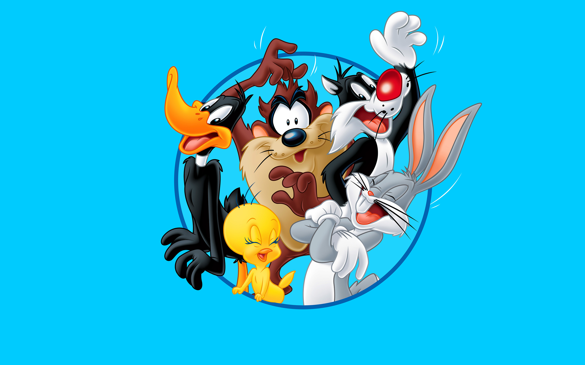

About Bugs Bunny
Bugs Bunny is an animated cartoon character created in the 1930's by Warner Brothers. He is a grey and white rabbit who is known for being a very clever trickster who can outsmart anyone he comes across.
Bugs Bunny and Friends
Bugs Bunny's Characteristics
- He's a white and grey rabbit.
- He loves carrots.
- He's outsmarts nearly everyone he comes in contact with, especially Elmer Fudd and Yosemite Sam.
Bugs Bunny's Friends
Bugs Bunny is a member of the Loony Tunes family. Click on the links below to find out more about them: